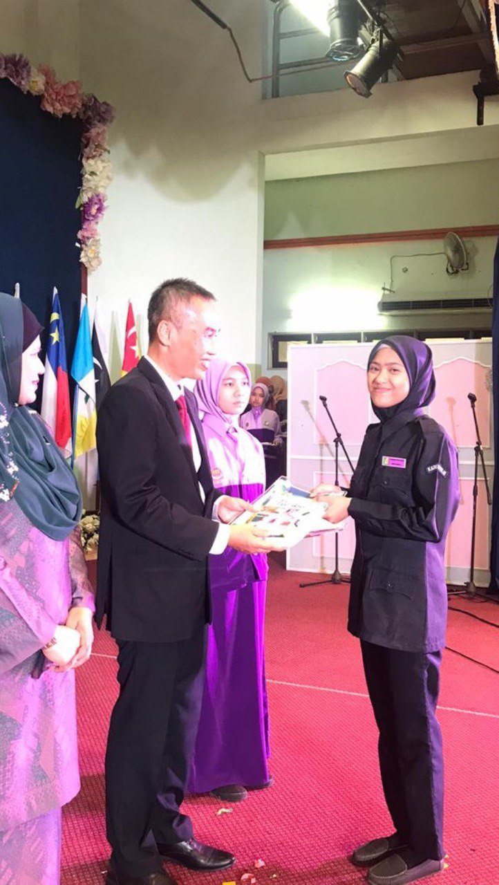
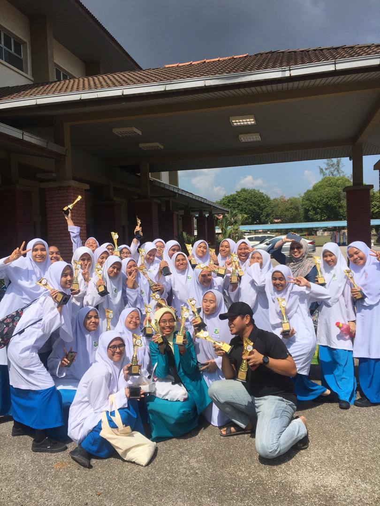
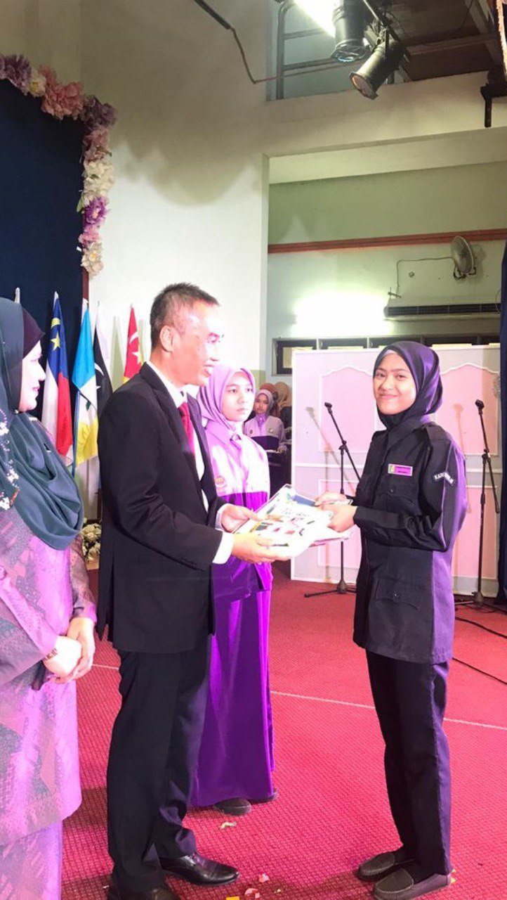
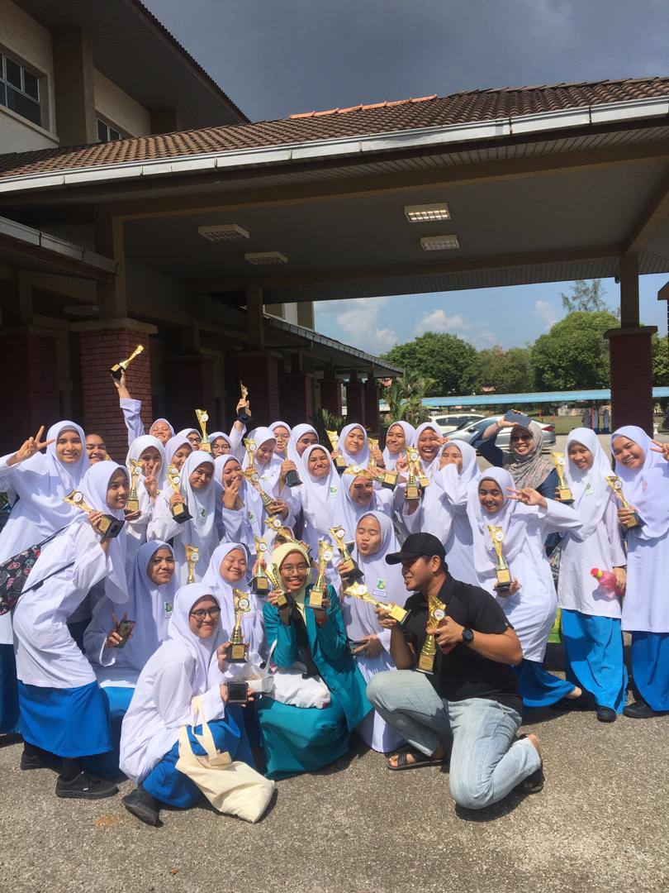
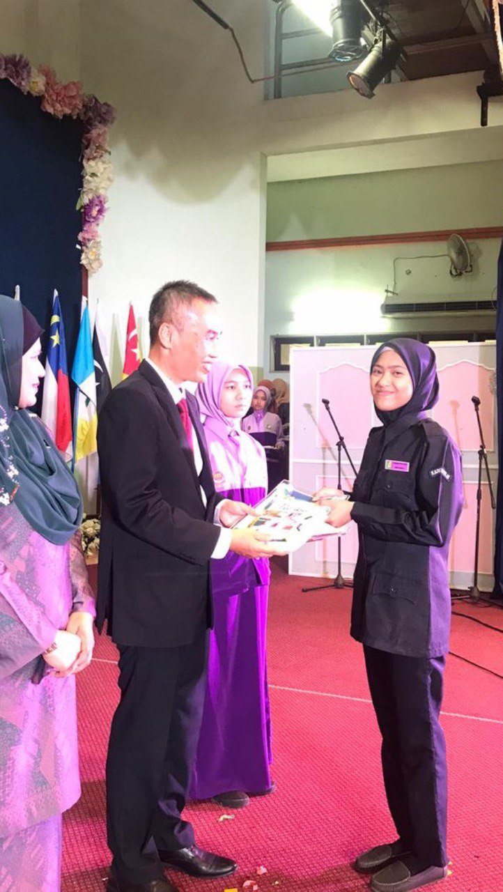
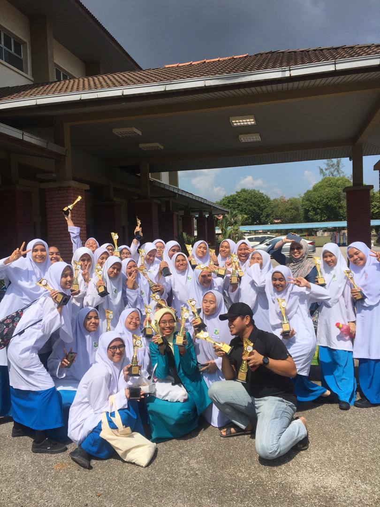

Highschool Memories:
 



Moments of my hobby:
© Copyright holder 2023
All right reserved. All website design and content can never be copy or transmit it as well as alter this site in any manner.
© Copyright holder 2023
All right reserved. All website design and content can never be copy or transmit it as well as alter this site in any manner.
Every little girl used to love the color pink and calling themselves pink girl. The same goes for me.
The difference is that it was not just a childhood phase for me. Pink is still my favourite shade of color. Soft pink to be precise.
My name is Farah Nabila and I'm 20 years old. Since I was a kid, my family describes me as an outgoing, talkative and kind person.
It builds confidence in which led me in having a big circle of friends in highschool.I went to a government highshool that was under the
International Baccaulaureate (IB) Programme. We were exposed to the IB personalities. There were ten of them to be exact which are inquirers,
knowledgeable,thinkers, communicators, principled, open-minded, caring, risk-takers, balanced and reflective.After learning about all the personalities,
teachers made us choose one. I chose the risk-taker personality as I think that life without taking any risk or getting out of our own comfort zone,
can be hard to achieve anything. From that day on, I participated in everything I can. I trained my leadership skills when I was voted to be the Vice President for the Archery Club and the Treasurer for the Sports Club.
I managed the clubs’ funds, resources and events with the help of my club members. It was a great experience to be surrounded with people with amazing
personalities. I was also involved with the school’s track and field team. I think that track and field was a perfect sport for me because I like short
distance running and my body also seems like it was made to run. Everything felt really natural for me. I made it to the district level
competition but failed to proceed to the next level but still I think that I put up a good fight nevertheless.
Moreover, I am used to speak in front of an audience. I was a member of my school’s Choral Speaking club. What I found unique with choral
speaking is that it is not just about talking in rhymes as a team, ut it also requires you to act as well. I remember during the audition to become a
member of the club, I was randomly given a situation and a role to act upon. I failed the audition in my first year. The experience did not discourage me
or make me want to give up but rather it make me stronger than ever. So, the next year I tried again and passed the audition with flying colors.
Finally, I got chosen to be one of the club members. My team made it to the Nationals and we became Champions. The experience taught me to never give up
even though you get rejected because no one knows what the future holds. After SPM result came out, I applied for an engineering foundation at UiTM.
Biology was never my cup of tea since forever but I still took it for SPM. In order to end my toxic relationship with biology,
I chose a non-biology related course for my first choice for UPU and Alhamdulillah I was given a chance to study there. Foundation at UiTM Dengkil
was a life changing experience for me, I have never lived too far from my family,so this gave me an opportunity to be more independent.
As for curriculum, I joined the Recording Music club and perform for events held at the campus. I became the lead vocalist, it was a healing experience
for me as the Covid-19 pandemic kind of took away my confidence to sing in front of people. I performed a lot in highschool but it was before the
pandemic happened. It still amazes me how a worldwide tragedy like the Covid-19 pandemic impacted me as a person. I became more observant and more aware
of my surroundings. Not to say it's a bad thing but I just needed time to adapt with the situation.
Other than co-curriculums, I also love maths if we are going to talk about academics. I enjoy doing calculations in Addmaths and Maths. Entering
foundation, we were introduced to the Computer Science subject as my foundation was not biology-related. My Computer Science's lecturer said that
this subject needs unparalleled creativity and mastery in Addmaths in order to excel. At that time, I kept wondering what are the correlation between
those two. However, after a whole semester worth of assignments and lectures, I finally understand what my lecturer meant.So, with my passion in Addmaths
powered by my past experience with all things related to creativity, I decided to choose Computer Science as my degree field. Now, I'm taking a
Bachelor in Science Computer Netcentric Computing at UiTM Shah Alam. Never once I regretted being in this field. It gave me tons of new knowledge and
I get to meet a lot of people that has the same passion as me. I thank Allah for this chance because He always listen to my prayers. Not to forget,
my family and friends that gave me a lot of support along the way and without them I can't be where I am right now. My advice to anyone reading this,
is that your effort will never betray you. There are phases when you think that your effort is all for nothing. But trust me, they don't.
It's just not the right time, YOUR time yet. Always believe that you are gonna to make it because without your own self confidence, others won't be
able to find it for you either.
© Copyright holder 2023
All right reserved. All website design and content can never be copy or transmit it as well as alter this site in any manner.
| Basic Information |
Phone Number:01978324053 Address:23, Jalan Puchong Barat, 05400, Selangor. |
Profile | A hardworking and highly passionate student currently taking Bachelor in Netcentric Computing. Ready to participate in any training or programme related to the part-timing job. I have a strong mindset, commited and determined to do the best in this job. |
|---|---|
| Employment History |
|
|
Education |
|
|
|
© Copyright holder 2023
All right reserved. All website design and content can never be copy or transmit it as well as alter this site in any manner.
| Day/Time | Mon | Tue | Wed | Thu | Fri |
|---|---|---|---|---|---|
| 8AM-10AM | ITT557 | ITS462 | CSC574 | ELC550 | |
| 10AM-12PM | ITT588 | ITT557 | ITS462 | ||
| 2PM-4PM | ITT569 | ITT588 | |||
| 4PM-6PM | TMC451 | CSC574 | ITT569 |
Course Name:Web Application Security
Lecturer's Name:Mohsen Bin Mohamad Hata
Course Name:Front End Technology
Lecturer's Name:Kamarul Ariffin Bin Abdul Basit
Course Name:Fundamentals of Artificial Intelligence
Lecturer's Name:Farah Aqilah Binti Bohani
Course Name:Internet of Things(IoT)
Lecturer's Name:Shapina Binti Haji Abdullah
Course Name:Introductory Mandarin (Level II)
Lecturer's Name:Low Hiang Loon
Course Name:Dynamic Web Application Development
Lecturer's Name:Nur Aina Khadijah Binti Adnan
Course Name:English For Academic Writing
Lecturer's Name:Siti Fauziana Binti Zakaria
© Copyright holder 2023
All right reserved. All website design and content can never be copy or transmit it as well as alter this site in any manner.


© Copyright holder 2023
All right reserved. All website design and content can never be copy or transmit it as well as alter this site in any manner.
Latest Academic Calendar PDF (Click here to download)
Resume:
Time Table:
© Copyright holder 2023
All right reserved. All website design and content can never be copy or transmit it as well as alter this site in any manner.
| ID: | |
|---|---|
| Password: |
© Copyright holder 2023
All right reserved. All website design and content can never be copy or transmit it as well as alter this site in any manner.
| First Name: | |
|---|---|
| Last Name: | |
| City: | |
© Copyright holder 2023
All right reserved. All website design and content can never be copy or transmit it as well as alter this site in any manner.


{kind=link}
{kind=link}